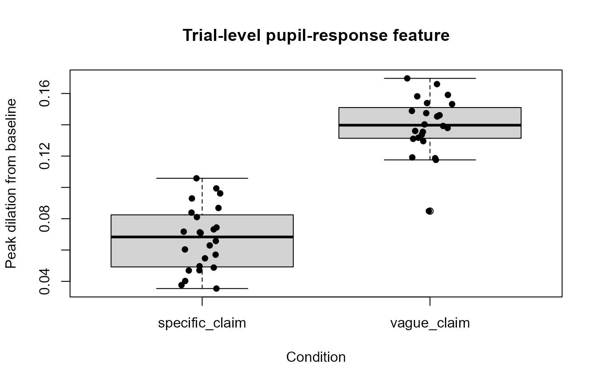
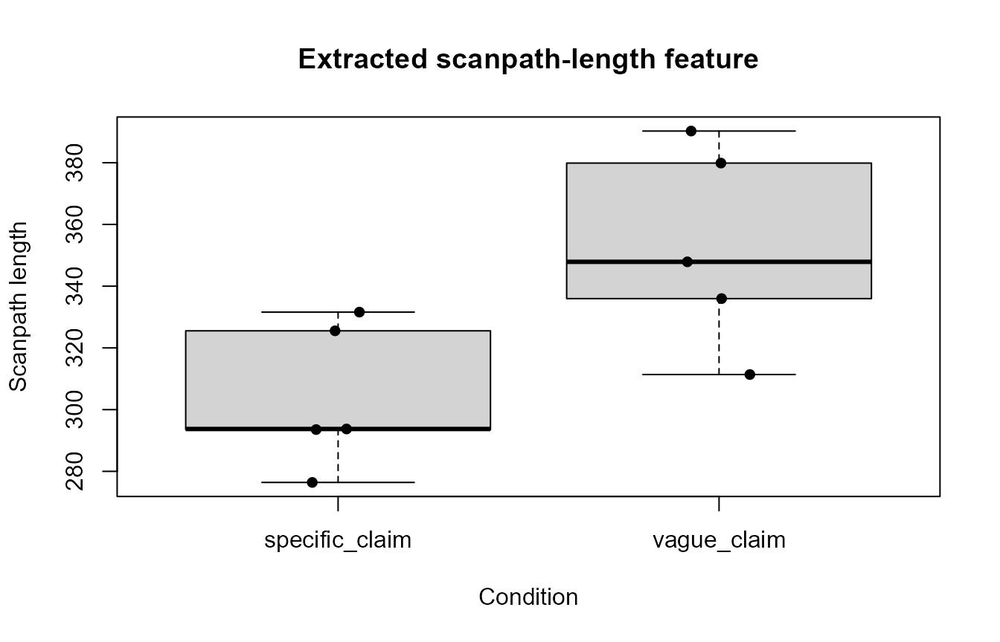

Bayesian planning workflow
Source:vignettes/articles/bayesian-planning-workflow.Rmd
bayesian-planning-workflow.RmdThis article demonstrates how the Bayesian-planning helpers in
gp3tools can be used before committing to a full Bayesian
model. The workflow covers model-family selection, structural readiness
checks, pupil-response feature extraction, scanpath geometry, HDDM
export preparation, and brms template generation.
The helpers support analysis planning and reproducible preparation.
They do not require Stan, brms, HDDM, or Python unless the
user subsequently chooses to fit an external model.
Choose an outcome family before fitting
The statistical family should follow the scale and distribution of the outcome rather than being selected after inspecting significance.
families <- recommend_gazepoint_model_family()
selected_metrics <- c(
"fixation_duration",
"dwell_time",
"fixation_count",
"aoi_proportion",
"pupil_timecourse",
"scanpath_length",
"binary_choice"
)
families[
families$metric %in% selected_metrics,
,
drop = FALSE
]
#> metric data_property
#> 1 fixation_duration positive, right-skewed
#> 2 dwell_time positive, right-skewed
#> 3 fixation_count non-negative count, often overdispersed
#> 4 aoi_proportion bounded proportion between 0 and 1
#> 6 pupil_timecourse continuous time-series, often autocorrelated
#> 11 scanpath_length positive, right-skewed
#> 13 binary_choice binary 0/1 outcome
#> recommended_family
#> 1 lognormal or gamma
#> 2 lognormal or gamma
#> 3 negative binomial or Poisson
#> 4 beta or binomial after denominator construction
#> 6 Gaussian with smooth time terms; consider AR(1) sensitivity
#> 11 gamma or lognormal
#> 13 Bernoulli/binomial
#> common_transform
#> 1 log(duration_ms)
#> 2 log(dwell_ms)
#> 3 none; model as count
#> 4 logit after boundary adjustment if needed
#> 6 baseline correction, smoothing, or time-course model
#> 11 log(scanpath_length)
#> 13 none
#> notes
#> 1 Avoid Gaussian models on raw fixation durations.
#> 2 Avoid Gaussian models on raw dwell times when strongly skewed.
#> 3 Check overdispersion before using Poisson models.
#> 4 Values exactly 0 or 1 require adjustment or a binomial formulation.
#> 6 Do not use repeated pointwise tests without accounting for time dependence.
#> 11 Interpret as search extent or inefficiency depending on task.
#> 13 Check response coding and class balance.The recommendations are planning guidance. Distributional shape, zero values, boundary values, overdispersion, hierarchical structure, and study design still need to be inspected in the actual dataset.
Simulate a compact pupil time course
The following synthetic dataset represents eight participants completing six trials each. Negative times form a prestimulus baseline, and positive times form the response window.
pupil <- expand.grid(
subject = paste0(
"S",
sprintf("%02d", 1:8)
),
trial = 1:6,
time_ms = seq(
-200,
1000,
by = 50
)
)
pupil$condition <- ifelse(
pupil$trial %% 2 == 0,
"specific_claim",
"vague_claim"
)
response_shape <- exp(
-((pupil$time_ms - 450) / 260)^2
)
condition_shift <- ifelse(
pupil$condition == "vague_claim",
0.12,
0.04
)
subject_effects <- setNames(
rnorm(
8,
mean = 0,
sd = 0.025
),
paste0(
"S",
sprintf("%02d", 1:8)
)
)
pupil$pupil_mm <- 3 +
unname(
subject_effects[pupil$subject]
) +
condition_shift * response_shape +
rnorm(
nrow(pupil),
mean = 0,
sd = 0.025
)
set.seed(123)
missing_rows <- sample(
seq_len(nrow(pupil)),
30
)
pupil$pupil_mm[missing_rows] <- NA_real_
head(pupil)
#> subject trial time_ms condition pupil_mm
#> 1 S01 1 -200 vague_claim 3.084966
#> 2 S02 1 -200 vague_claim 2.984546
#> 3 S03 1 -200 vague_claim 3.041932
#> 4 S04 1 -200 vague_claim 3.073219
#> 5 S05 1 -200 vague_claim 2.975617
#> 6 S06 1 -200 vague_claim 2.990609Plot the synthetic pupil time course
tc <- aggregate(
pupil_mm ~ time_ms + condition,
data = pupil,
FUN = function(x) {
mean(
x,
na.rm = TRUE
)
}
)
specific_tc <- tc[
tc$condition == "specific_claim",
,
drop = FALSE
]
vague_tc <- tc[
tc$condition == "vague_claim",
,
drop = FALSE
]
plot(
specific_tc$time_ms,
specific_tc$pupil_mm,
type = "l",
lwd = 2,
ylim = range(
tc$pupil_mm,
na.rm = TRUE
),
xlab = "Time from stimulus onset (ms)",
ylab = "Mean pupil size (mm)",
main = "Synthetic pupil time course"
)
lines(
vague_tc$time_ms,
vague_tc$pupil_mm,
lty = 2,
lwd = 2
)
abline(
v = 0,
lty = 3
)
legend(
"topright",
legend = c(
"Specific claim",
"Vague claim",
"Stimulus onset"
),
lty = c(
1,
2,
3
),
lwd = c(
2,
2,
1
),
bty = "n"
)Extract trial-level pupil-response features
summarize_gazepoint_pupil_response_features() calculates
transparent trial-level summaries from sample-level pupil data. The
baseline and response windows are specified explicitly.
pupil_features <- summarize_gazepoint_pupil_response_features(
data = pupil,
pupil = "pupil_mm",
time = "time_ms",
subject = "subject",
trial = "trial",
baseline_window = c(
-200,
0
),
response_window = c(
0,
1000
),
condition = "condition"
)
head(pupil_features)
#> subject trial baseline_mean peak_dilation latency_to_peak auc
#> 1 S01 1 3.042491 0.11758386 400 44.77568
#> 2 S02 1 2.989078 0.14611109 450 49.00151
#> 3 S03 1 2.994252 0.16964340 450 71.03254
#> 4 S04 1 3.034405 0.08486674 450 20.73993
#> 5 S05 1 2.997575 0.15817413 500 71.29005
#> 6 S06 1 2.989950 0.14023499 450 68.23703
#> missing_percent interpolated_percent condition
#> 1 0.00000 NA vague_claim
#> 2 0.00000 NA vague_claim
#> 3 9.52381 NA vague_claim
#> 4 0.00000 NA vague_claim
#> 5 0.00000 NA vague_claim
#> 6 0.00000 NA vague_claimThe returned table includes the baseline mean, peak dilation, latency to peak, area under the baseline-corrected curve, and response-window missingness.
boxplot(
peak_dilation ~ condition,
data = pupil_features,
xlab = "Condition",
ylab = "Peak dilation from baseline",
main = "Trial-level pupil-response feature"
)
stripchart(
peak_dilation ~ condition,
data = pupil_features,
vertical = TRUE,
method = "jitter",
pch = 16,
add = TRUE
)
Check readiness before modelling
check_gazepoint_bayesian_readiness() performs
lightweight structural checks. It can identify missing columns,
insufficient within-participant observations, missing condition
variation, and problematic outcome values.
readiness <- check_gazepoint_bayesian_readiness(
data = pupil_features,
outcome = "peak_dilation",
subject = "subject",
trial = "trial",
condition = "condition",
metric_type = "continuous",
min_observations_per_subject = 4
)
readiness
#> check status
#> 1 required_columns pass
#> 2 outcome_values pass
#> 3 observations_per_subject pass
#> 4 condition_variation pass
#> 5 trial_missingness pass
#> message
#> 1 All specified columns are present.
#> 2 Outcome contains observed values.
#> 3 Subjects meet the minimum observation threshold.
#> 4 Condition has 2 observed levels.
#> 5 Subject-trial missingness is within threshold.A warning is a prompt for review rather than an automatic exclusion decision. The appropriate threshold depends on the study design, outcome, planned model, and sensitivity analyses.
Create a statistical analysis plan checklist
sap <- create_gazepoint_bayesian_sap(
outcome = "Peak pupil dilation",
design = paste(
"Within-participant contrast between",
"specific-claim and vague-claim trials"
),
primary_model = "Bayesian hierarchical Gaussian model",
baseline_window = c(
-200,
0
),
analysis_window = c(
0,
1000
),
missingness_threshold = 0.20,
blink_padding_ms = 50,
output = "data.frame"
)
sap
#> section item
#> 1 Study design Design
#> 2 Outcome Primary outcome
#> 3 Preprocessing Locked preprocessing decisions
#> 4 Blink handling Blink padding
#> 5 Missingness Trial exclusion threshold
#> 6 Baseline correction Baseline window
#> 7 Analysis window Primary analysis window
#> 8 Model family Primary model
#> 9 Prior specification Weakly informative priors
#> 10 Hierarchical structure Participant/item structure
#> 11 MCMC diagnostics Convergence checks
#> 12 Inference rule Decision criterion
#> 13 Reporting Reproducibility checklist
#> planned_specification
#> 1 Within-participant contrast between specific-claim and vague-claim trials
#> 2 Peak pupil dilation
#> 3 Define filtering, interpolation, AOI assignment, and exclusion rules before analysis.
#> 4 50 ms before and after detected blink edges, unless otherwise justified.
#> 5 Flag or exclude trials above 20% missingness.
#> 6 [-200, 0]
#> 7 [0, 1000]
#> 8 Bayesian hierarchical Gaussian model
#> 9 Specify priors for fixed effects, residual scale, and hierarchical variance terms.
#> 10 Include participant-level structure; include item/stimulus structure when the design supports it.
#> 11 Require acceptable R-hat, effective sample size, and no problematic divergent transitions.
#> 12 Define HDI, ROPE, Bayes factor, or posterior probability threshold before analysis.
#> 13 Report preprocessing decisions, model formula, priors, diagnostics, exclusions, and sensitivity checks.The checklist makes preprocessing, exclusion, prior, hierarchical-structure, convergence, and reporting decisions explicit before the main analysis.
Prepare an HDDM export
HDDM requires one row per decision trial with a participant identifier, positive response time, and binary response. Continuous predictors can be standardized within participant.
choice_data <- pupil_features
set.seed(456)
choice_data$rt <- runif(
nrow(choice_data),
min = 0.45,
max = 1.40
)
choice_data$response <- sample(
c(
0,
1
),
nrow(choice_data),
replace = TRUE
)
hddm_ready <- prepare_gazepoint_hddm_export(
data = choice_data,
subject = "subject",
rt = "rt",
response = "response",
predictors = c(
"peak_dilation",
"auc"
)
)
head(hddm_ready)
#> subj_idx rt response peak_dilation_z auc_z
#> 1 1 0.5350740 1 0.4152555 0.4281994
#> 2 2 0.6499867 1 1.0289667 0.7169095
#> 3 3 1.1463075 1 1.3323233 1.2529888
#> 4 4 1.2595269 0 -0.3794053 -0.4520169
#> 5 5 1.1989780 1 0.8815185 1.2901689
#> 6 6 0.7653620 0 0.8771776 1.3177947The helper does not fit a drift-diffusion model. The returned table can be written to CSV and analysed in a separately documented Python/HDDM environment.
Create a brms model template without fitting
pupil_template <- create_gazepoint_brms_template(
metric_type = "pupil_timecourse",
outcome = "pupil_bc",
time = "time_ms",
condition = "condition",
subject = "subject"
)
pupil_template
#> $metric_type
#> [1] "pupil_timecourse"
#>
#> $formula
#> [1] "pupil_bc ~ condition + s(time_ms, by = condition, k = 5) + s(time_ms, subject, bs = \"fs\", k = 5)"
#>
#> $family
#> [1] "gaussian()"
#>
#> $priors
#> [1] "prior(normal(0, 1), class = \"b\")"
#> [2] "prior(exponential(1), class = \"sigma\")"
#> [3] "prior(exponential(1), class = \"sd\")"
#>
#> $notes
#> [1] "Template only; inspect autocorrelation and consider AR(1) sensitivity."
#> [2] "Use baseline-corrected pupil values when the research question concerns phasic change."
#> [3] "Report time window, baseline window, smoothing basis, and convergence diagnostics."The output contains a candidate formula, family, prior text, and reporting notes. It is deliberately a template rather than a fitted model.
Extract scanpath geometry
The next example creates synthetic sequential gaze coordinates and extracts trial-level scanpath geometry.
set.seed(789)
scanpath <- do.call(
rbind,
lapply(
1:10,
function(trial_id) {
n <- 25
data.frame(
subject = paste0(
"S",
sprintf(
"%02d",
ceiling(trial_id / 2)
)
),
trial = trial_id,
condition = ifelse(
trial_id %% 2 == 0,
"specific_claim",
"vague_claim"
),
time_ms = seq_len(n) * 40,
x = cumsum(
rnorm(
n,
mean = ifelse(
trial_id %% 2 == 0,
9,
13
),
sd = 8
)
) + 400,
y = cumsum(
rnorm(
n,
mean = 4,
sd = 6
)
) + 300
)
}
)
)
head(scanpath)
#> subject trial condition time_ms x y
#> 1 S01 1 vague_claim 40 417.1928 300.9261
#> 2 S01 1 vague_claim 80 412.1066 303.3174
#> 3 S01 1 vague_claim 120 424.9492 306.1220
#> 4 S01 1 vague_claim 160 439.4143 315.2614
#> 5 S01 1 vague_claim 200 449.5235 318.2607
#> 6 S01 1 vague_claim 240 458.6476 320.0067
scan_features <- compute_gazepoint_scanpath_geometry(
data = scanpath,
x = "x",
y = "y",
subject = "subject",
trial = "trial",
time = "time_ms",
condition = "condition"
)
head(scan_features)
#> subject trial n_points scanpath_length straight_line_distance
#> 1 S01 1 25 311.3715 264.2228
#> 2 S01 2 25 325.5328 266.2296
#> 3 S02 3 25 379.8781 322.5578
#> 4 S02 4 25 293.5460 228.9091
#> 5 S03 5 25 335.9712 294.7388
#> 6 S03 6 25 276.4166 197.0523
#> scanpath_efficiency convex_hull_area spatial_dispersion condition
#> 1 0.8485774 5226.757 74.65742 vague_claim
#> 2 0.8178273 5690.127 73.83522 specific_claim
#> 3 0.8491087 5538.208 77.28721 vague_claim
#> 4 0.7798067 5346.367 56.10669 specific_claim
#> 5 0.8772739 5220.571 83.83887 vague_claim
#> 6 0.7128816 3924.023 50.72105 specific_claimThe output includes scanpath length, straight-line distance, path efficiency, convex-hull area, spatial dispersion, and the number of valid points.
one_trial <- scanpath[
scanpath$trial == 1,
,
drop = FALSE
]
plot(
one_trial$x,
one_trial$y,
type = "b",
pch = 16,
xlab = "Screen x-coordinate",
ylab = "Screen y-coordinate",
main = "Example synthetic scanpath"
)
text(
one_trial$x[
c(
1,
nrow(one_trial)
)
],
one_trial$y[
c(
1,
nrow(one_trial)
)
],
labels = c(
"Start",
"End"
),
pos = c(
2,
4
)
)
boxplot(
scanpath_length ~ condition,
data = scan_features,
xlab = "Condition",
ylab = "Scanpath length",
main = "Extracted scanpath-length feature"
)
stripchart(
scanpath_length ~ condition,
data = scan_features,
vertical = TRUE,
method = "jitter",
pch = 16,
add = TRUE
)
Interpretation boundary
The helpers above produce model-ready quantities and reproducible planning objects. They do not independently establish deeper cognition, critical evaluation, comprehension, credibility assessment, or a causal psychological mechanism.
Eye-movement measures can support claims about visual allocation, timing, sequence, and movement geometry. Pupil measures can support claims about pupil dynamics under documented preprocessing and luminance control. Stronger psychological interpretations require an explicit experimental design, preregistered contrasts, validated complementary measures, suitable models, and appropriately cautious language.